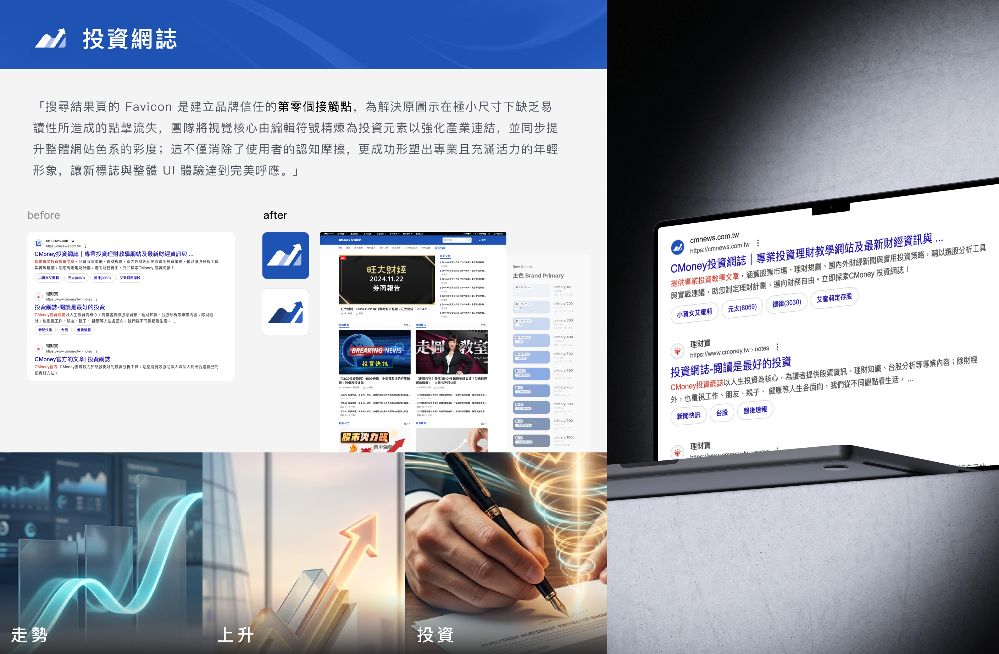
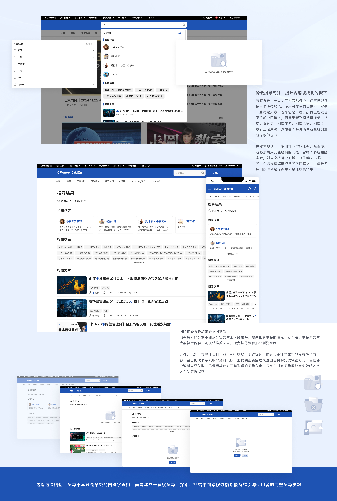
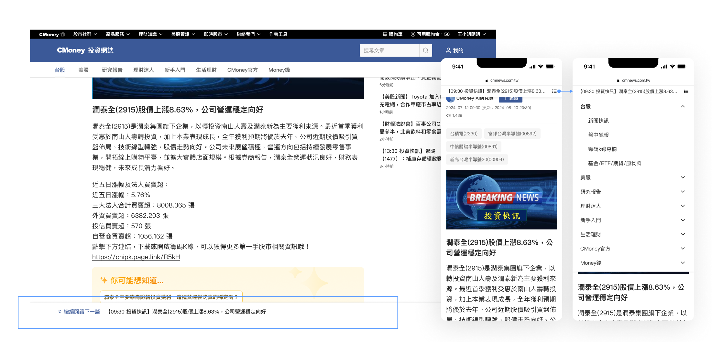
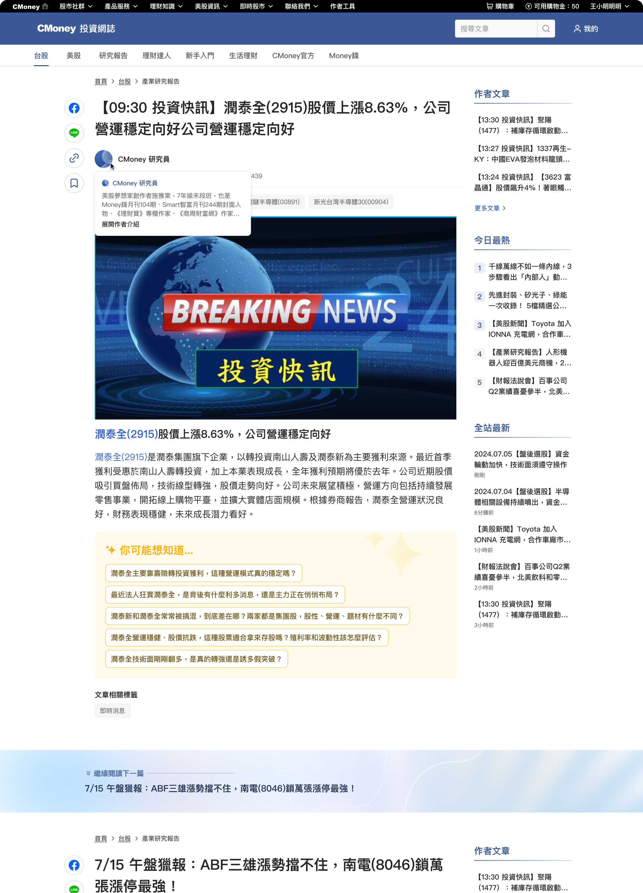
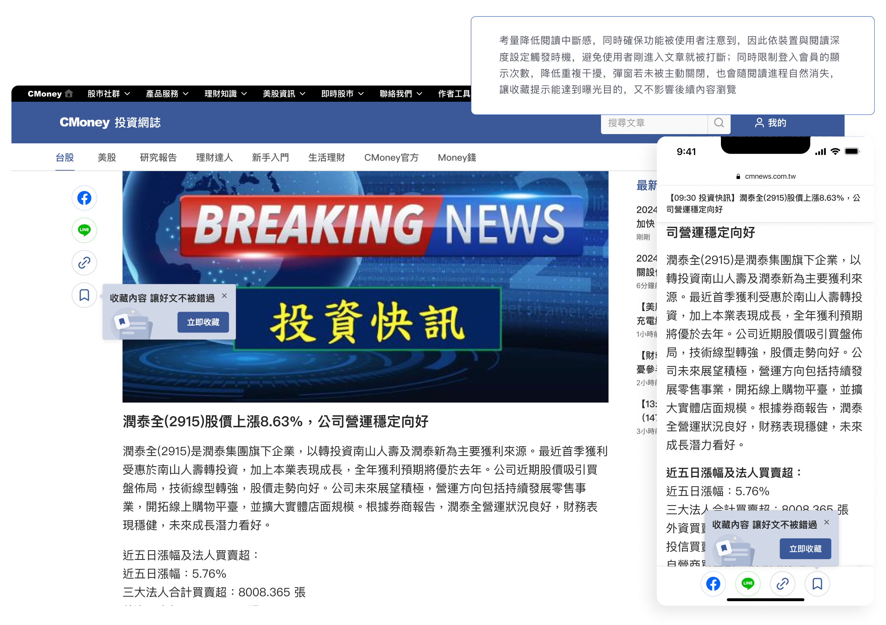

從「搜尋進站」到「持續閱讀」，透過品牌識別、站內搜尋、文章閱讀與個人化功能的整體優化，降低使用者尋找與閱讀內容的阻力，提升 PV、PV / Session、停留時間與 SEO 搜尋表現。
投資網誌的主要成長來源為 Google 自然搜尋與推薦流量，但成長開始趨緩。問題不只是「如何取得更多流量」，而是使用者從搜尋結果進站後，能不能更容易找到內容、讀更多文章，並建立再次回來的理由。
我們從完整 User Journey 中發現品牌辨識、搜尋效率、閱讀模組彼此競爭、缺乏回訪機制四個核心問題，並以此定義接下來四大優化策略的方向。
下半年延續 SEO 成效，透過 AI 加速內容產製，承接用戶的市場情緒與精進投資意圖，進而提高流量
投資網誌的主要成長來源之一為 Google 自然搜尋與推薦流量，我們從完整使用者旅程中發現四個主要問題，成為接下來優化策略的核心依據。
品牌辨識不足
中衝擊 品牌識別既有品牌識別系統與網站視覺較難與年輕使用者建立連結，Google 搜尋結果中的網站圖示辨識度也不足，錯失在搜尋結果頁建立品牌印象的機會。
搜尋效率不足
高衝擊 搜尋體驗站內搜尋的操作流程與結果缺乏足夠的篩選與資訊層級，使用者需要花更多時間才能找到真正想看的內容，搜尋無結果的比例居高不下。
閱讀模組彼此競爭
高衝擊 閱讀體驗人工智慧延伸閱讀、延伸推薦、下一篇文章、分享與作者資訊同時出現，互相競爭注意力；連續閱讀上線後，使用者甚至可能沒有意識到自己已進入下一篇文章。
缺少回訪機制
中衝擊 會員回訪使用者即使讀到有價值的文章，也缺乏簡單方式保存，網站缺少「收藏 → 登入 → 回訪」的完整留存旅程。
「 使用者從搜尋結果進站後，我們能不能讓他更容易找到內容、讀更多文章，並建立再次回來的理由？ 」
沒有直接把目標設定成改版網站，而是把商業目標拆解成四個可以被設計影響、也可以被驗證的使用者行為。
把商業目標拆成四個可以被驗證的使用者行為漏斗，取代單一「改版網站」目標。
進站
讓搜尋結果中的品牌更容易被辨識，降低使用者進站的認知成本。
觀察指標
搜尋結果頁點擊率・自然流量・直接流量
找到內容
縮短使用者從「我想找某個資訊」到「找到值得閱讀文章」的距離。
觀察指標
搜尋結果點擊率・無結果比例
繼續閱讀
提高使用者一次瀏覽期間內閱讀更多文章的機率。
核心指標
PV / Session・滾動深度・停留時間
再次回來
透過收藏與會員功能建立後續回訪的理由。
觀察指標
收藏率・回訪用戶
全站主色改為辨識度更高、飽和度更高的藍色，並更新標誌、品牌視覺與網站圖示。這個小圖示不只出現在網站上，也會出現在 Google 搜尋結果中——這次調整的重點是即使在高密度的搜尋結果頁中，使用者也能快速辨識這是投資網誌的內容。
重點作法
設計假設
更一致且容易辨識的品牌識別，可以增加搜尋結果中的品牌識別度，並降低新使用者第一次接觸網站時的認知成本。

重新檢視站內搜尋旅程：輸入關鍵字 → 查看結果 → 判斷內容 → 修改搜尋 → 進入文章，並優化搜尋輸入流程、結果資訊架構、篩選條件與特定作者搜尋。目標不是增加更多搜尋功能，而是縮短使用者找到值得閱讀文章所需的步驟。
重點作法
重整搜尋結果資訊架構與篩選條件
降低判斷內容所需的時間
新增特定作者搜尋
承接高意圖的精準查找需求
優化搜尋介面與前端體驗
縮短輸入到結果的反應時間
設計假設
降低搜尋摩擦可提升搜尋結果點擊率與搜尋後的 PV / Session。

為了提升 PV / Session，團隊導入文章「連續閱讀」，使用者讀完一篇後可直接接續下一篇。上線後 PV / Session +10.57%（電腦版閱讀頁數 1.29→1.51，手機版閱讀頁數 1.18→1.29），但低於原先預期(因應舊站相似功能原預估平均2.35)。
進一步分析發現，人工智慧延伸閱讀與連續閱讀同時希望使用者繼續探索，卻互相競爭注意力——延伸閱讀區塊增加頁面長度，使用者更難滑到下一篇，點擊後也會中斷閱讀流程。因此重新整理文章結尾的資訊層級：新增「下一篇」邊界、精簡作者介紹、降低次要推薦能見度；手機版則依滑動方向調整固定導覽列，閱讀時降低分享與延伸閱讀的干擾。
重點作法
新增「下一篇」邊界與標題
清楚劃分上一篇與下一篇的閱讀範圍
精簡作者介紹、降低次要推薦能見度
減少模組之間互相競爭
手機版依滑動方向切換固定導覽列
閱讀時專注內容，探索時再提供操作
設計假設
控制每個內容模組出現的時間與優先順序，比增加更多功能更有效提升整體閱讀深度。
同步嘗試驗證的方案

結論
手機版保留滑動標題提示，幫助使用者在長文閱讀中不迷失位置，提升導讀清晰度。
桌機版則不另加上方固定標題，因為已有右側區塊的作者資訊排列，足以支撐使用者定位需求，也避免視覺重複，保留原本上方文章導覽列即可。

新增文章收藏功能，但設計問題不只是「放一顆愛心」。我們同步思考收藏何時該被看見、滑動時哪些功能保留、分享與收藏是否競爭、手機版有限空間如何維持文章脈絡，並將收藏視為「內容 → 收藏 → 帳號 → 回訪」完整留存旅程的第一步。
重點作法
新增文章收藏功能
讓有價值的內容可以被簡單保存
設計收藏後的查看與提示路徑
讓收藏自然成為登入與回訪的動機
平衡分享、收藏與人工智慧延伸閱讀的能見度
避免功能之間互相競爭注意力
設計假設
個人化收藏是建立「習慣回訪」的最低門檻切入點，可有效提升回訪用戶與登入率。

不是一次性改版，而是透過「假設 → 設計 → 上線 → 數據 → 迭代」的流程反覆驗證與調整；以下為 AI 延伸閱讀 2025/08 上線後至 11 月的追蹤成效。
連續閱讀
PV / Session
+0.00%
電腦版滾動深度提升 17.1%，手機版提升 9.3%
AI 延伸閱讀（2025/08 上線後~11 月）
電腦版 CTR
0.52% → 2.58%
電腦版停留時間
43s → 90s
手機版 CTR
0.74% → 2.61%
手機版停留時間
31s → 68s
核心設計洞察
多個功能都有各自合理的 KPI——AI 希望提高探索、連續閱讀希望提高 PV / Session、搜尋希望降低找內容的成本、收藏希望增加回訪。但若只看單一功能 KPI，很容易讓產品累積越來越多互相競爭的入口。
設計原則轉變
最後的設計原則不再是「這個功能要不要放」，而是「使用者現在最需要做什麼」。透過滑動狀態、資訊層級與數據驗證，讓不同功能在正確的時間出現。
全站主色改為飽和度更高的藍色
提升整體品牌辨識度
更新標誌與品牌視覺系統
建立更年輕化的品牌印象
重新設計網站圖示
強化搜尋結果頁中的辨識度